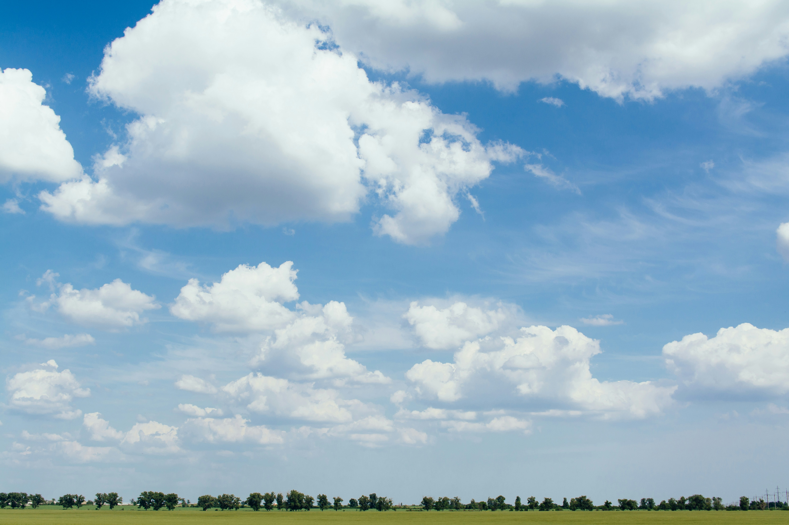

OUR STORY · CREATIVITY, CONNECTION, CONTRIBUTION
Creativity brought meback to myself.
Making. Meaning. Belonging.
SCROLL TO FOLLOW THE STORY01 / THE BEGINNING
It started witha need.
The Meridyan began during a season of my life when I needed somewhere to put my hands, my mind, and my energy.
I started creating, not because I had a business plan, but because making things gave me a sense of purpose and belonging that I had been missing.
02 / CRYSTAL TREES
Little pieces becamesomething bigger.
Eventually, a few pieces became crystal trees. Those trees became gifts. Gifts became orders. Orders became workshops. And somewhere along the way, The Meridyan became something much bigger than the things I was making.
03 / WHAT IS THE MERIDYAN?
A creative space built aroundthree things.
Connection, contribution, and creation. We make things. We gather around tables. We learn from each other. We give meaningful gifts. We support people when we can. We create space for individuality without losing sight of the fact that we're all part of something bigger.
Some days that looks like a crystal tree workshop. Sometimes it's a handmade piece created for someone going through a major season of life. And as The Meridyan grows, I hope it becomes a platform for experiences, community, generosity, collaboration, and a whole lot of beautiful uniqueness.
04 / THE MERIDYAN WAY
Three things wekeep coming back to.
Connection
Creating spaces where people can show up as themselves and create something alongside one another.
Contribution
We leave people, communities, and the world around us a little better than we found them.
Creation
Experimenting, learning, screwing things up, trying again, and creating something that didn't exist before.
05 / MY SHORT STORY
Hi, I'mKaitlyn.
I didn't set out to become an artist.
After leaving the corporate world in 2025, I went through one of the hardest periods of my life. For months, I felt disconnected from myself, my purpose, and unsure of what came next.
Eventually, I started making things as a way to feel purposeful again.
I taught myself as I went. My first crystal trees were literally glued to paper plates. They weren't exactly destined for an art museum, but making them made me feel something I hadn't felt in a while: excited.
So I kept going.
I experimented. I made mistakes. I learned.
People started asking if they could buy what I was creating. Then they trusted me with pieces connected to their relationships, losses, new beginnings, celebrations, and stories.
That's when I realized this wasn't really about crystals or wire.
It was about what we attach meaning to, and what happens when we create with intention.
THE MERIDYAN